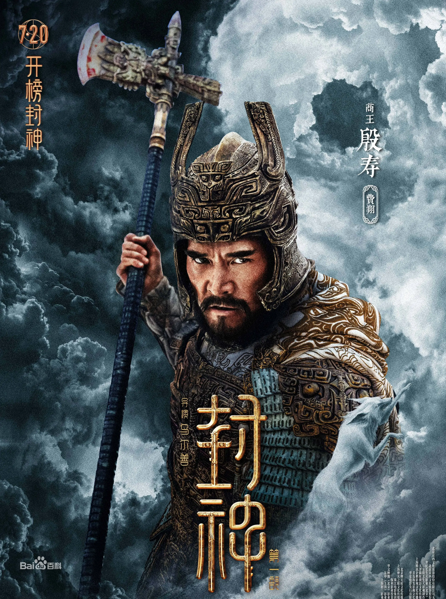
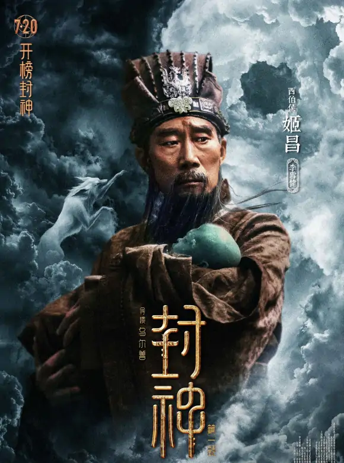

又名: 封神第一部 / 封神三部曲1 / 封神演义系列·龙之战 / 封神三部曲之妖乱国殇 / Creation of the Gods Ⅰ: Kingdom of Storms / Creation of the Gods Ⅰ
商王殷寿（费翔 饰）勾结狐妖妲己（娜然 饰），暴虐无道，引发天谴。昆仑仙人姜子牙（黄渤 饰）携“封神榜”下山，寻找天下共主，以救苍生。西伯侯之子姬发（于适 饰）逐渐发现殷寿的本来面目，反出朝歌。各方势力暗流涌动，风云变幻端倪初显……

基本信息
演员介绍
-

殷寿演员 费翔 Kris Phillips
殷寿是商王帝乙的幼子，是王后所生，因此立为太子。帝乙去世后，殷寿即位。殷寿是商朝的最后一任帝王，在位期间倒行逆施、沉湎酒色、穷兵黩武、重刑厚敛，他的暴行终致众叛亲离，陷入绝境。
-
姬发演员 于适
姬发是周文王姬昌与太姒的嫡次子，周文王崩逝，姬发继位，称为周武王，在位19年。他是西周王朝的开国君主。在姜子牙和众将的辅佐之下，上承天命、下应黎民，开启了周代八百年的统治
-
殷郊演员 陈牧驰
殷郊是商纣王的长子，在母亲姜王后被杀后，遭到纣王派兵追捕，殷郊走投无路之际，被官兵抓回朝歌判死刑，后被阐教仙人广成子救往九仙山桃源洞修道。艺成出师后，奉广成子之命，下山协助周武王克殷，在途中得知弟弟殷洪被周军所杀，转而决定为弟报仇，加入商军攻打周军。
-
妲己演员 娜然
苏妲己，本是商朝冀州侯苏护之女，乃倾国倾城、美艳娇媚、闭月羞花的绝色美女。后被狐妖借尸还魂附身，迷惑纣王，败殷商气运，断送商汤六百年基业之辉。
-

西伯侯姬昌演员 李雪健
姬昌是周朝的奠基者，姬昌面对残暴纣王时忍辱负重不怨天尤人，对待姜子牙等有才之人时谦虚真诚礼贤下士，是一代明君。因崇侯虎向纣王迸谗言，而被囚于羑里，后来被释放。在位四十二年后，正式称王，史称周文王。
-
 姜子牙演员 黄渤
姜子牙演员 黄渤姜子牙是昆仑山玉虚宫元始天尊门下的阐教弟子，修道40年，他奉元始天尊之命下山封神，并带着“凤鸣岐山，周氏当兴”的嘱托，帮助西岐推翻商纣王的统治。辅佐姬昌建立周朝。